Today’s Etherpad
(with an exercise and a link to a quiz)
Sampling
- Sampling Nature
- Describing your Sample
- Using a Sample to Describe a Population
Today’s Quiz
What is a population?
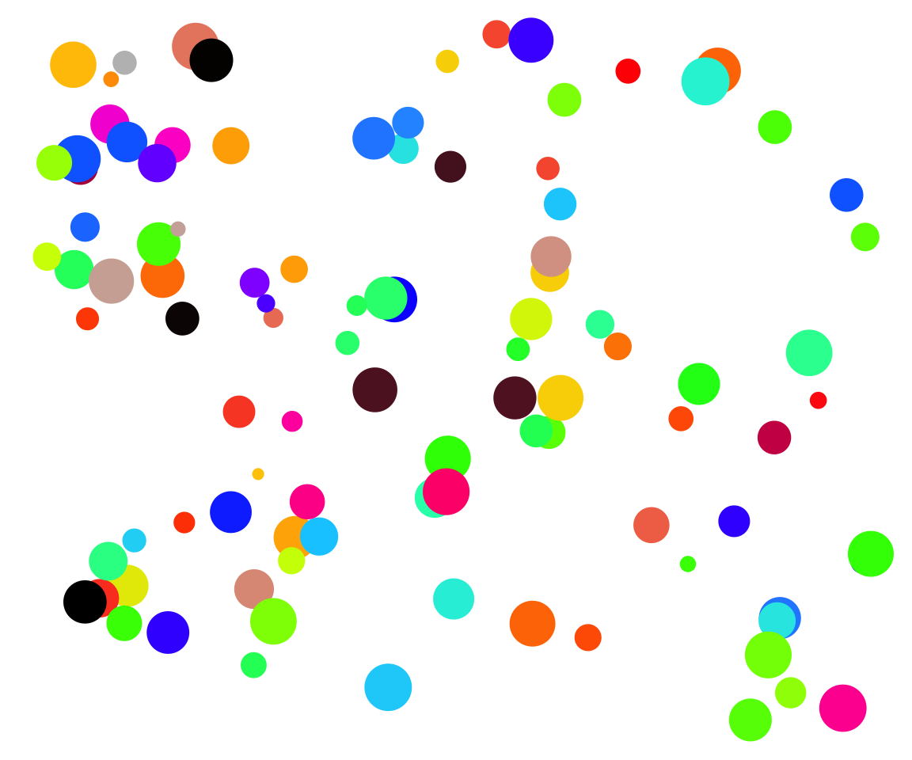Population = All Individuals
What is a sample?
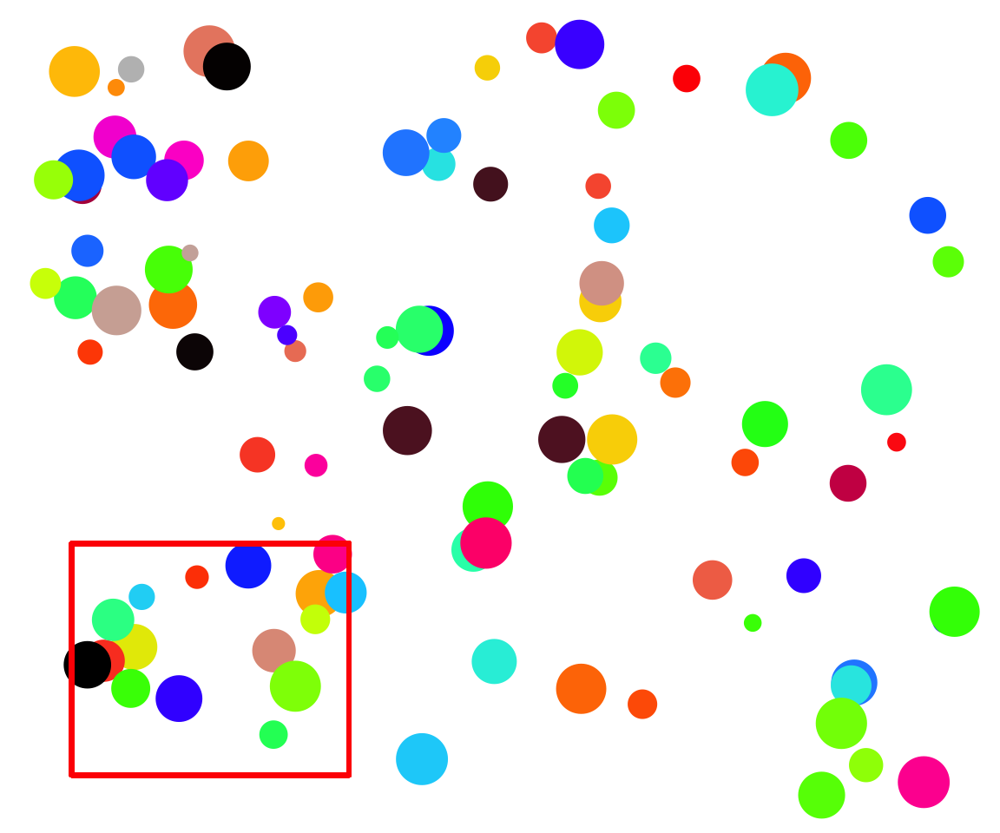How can sampling a population go awry?
- Sample is not representative
- Replicates do not have equal chance of being sampled
- Replicates are not is not independent
Bias from Unequal Representation
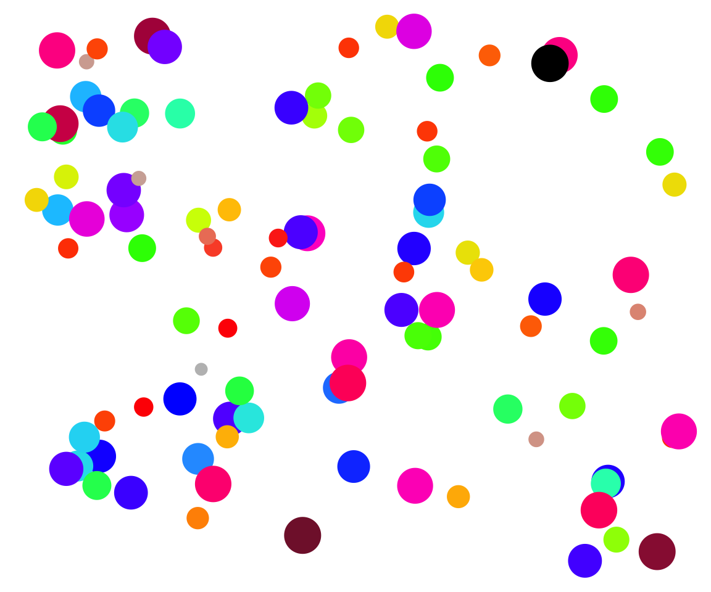 If you only chose one color, you would only get one range of sizes.
Bias from Unequal Change of Sampling
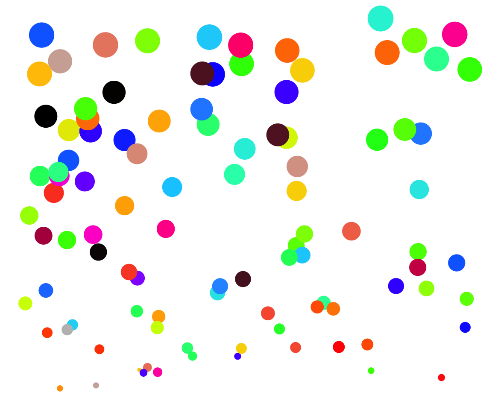 Spatial gradient in size
Bias from Unequal Change of Sampling
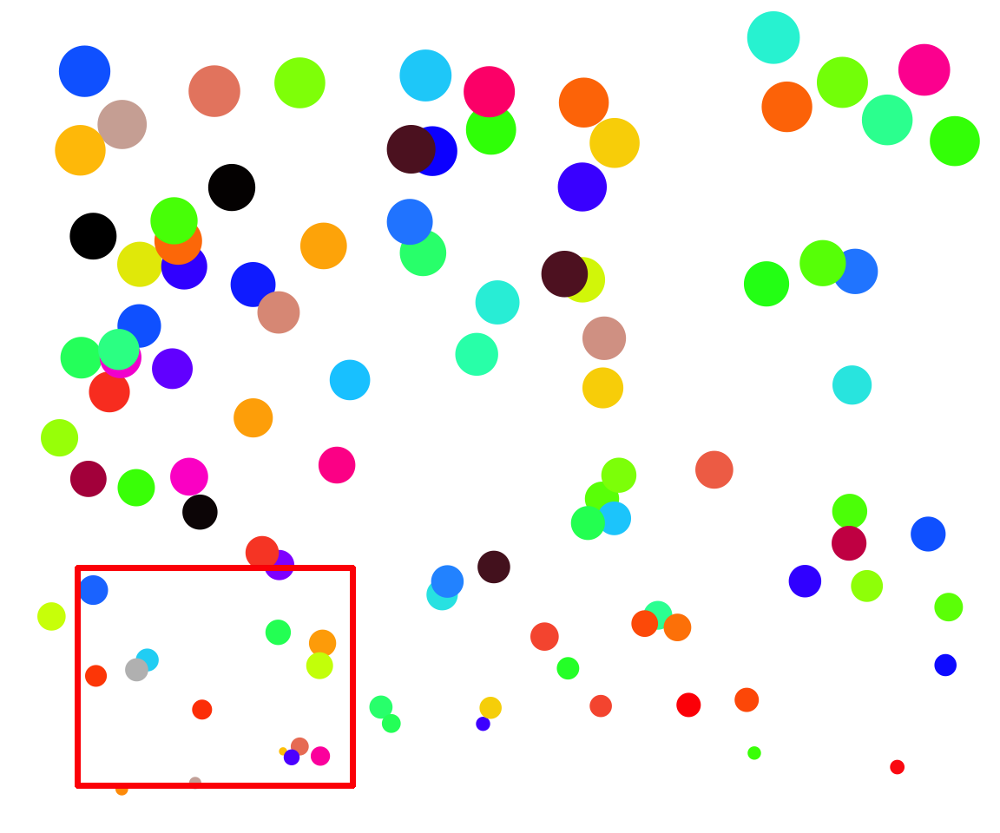 Oh, I’ll just grab those individuals closest to me…
Solution: Stratified Sampling
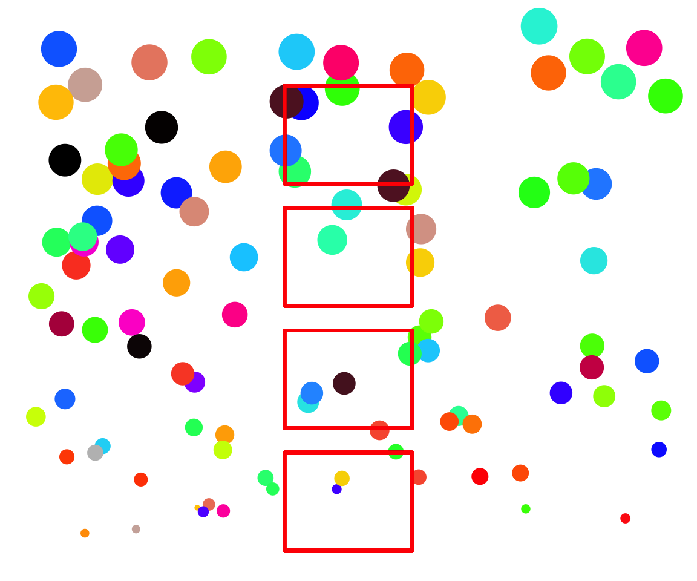 Sample over a known gradient, aka cluster sampling
Can incorporate multiple gradients
Solution: Random Sampling

- Random - samples chosen using random numbers
- Haphazard - samples chosen without any system (careful!)
Non-Independence & Haphazard Sampling
 What if there are interactions between individuals?
What if there are interactions between individuals?
Solution: Chose Samples Randomly
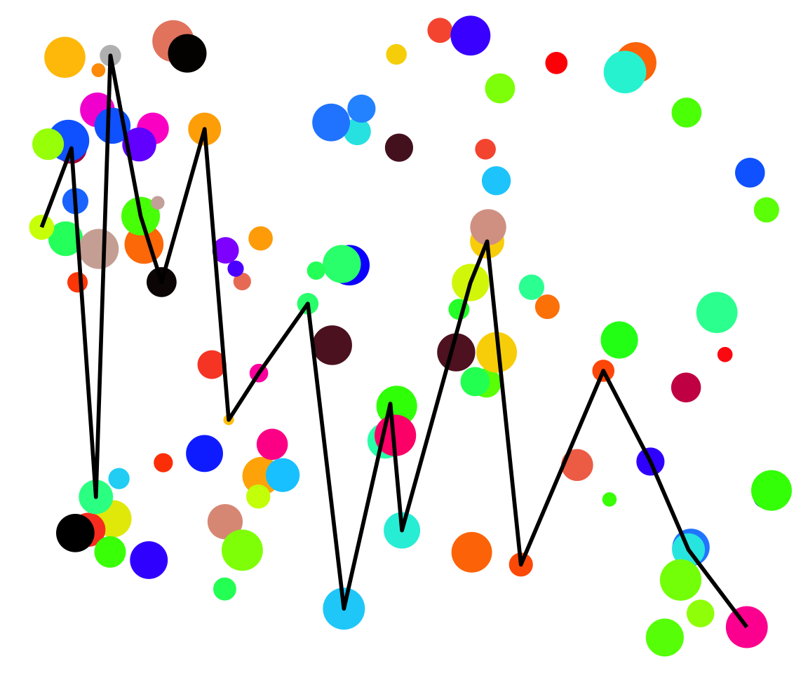 Path chosen with random number generator
Deciding Sampling Design
What influences the measurement you are interested in?
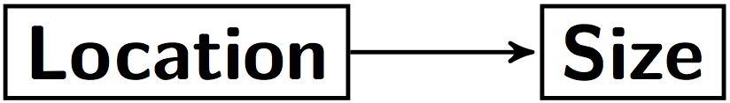
Stratified or Random?
Do you know all of the influences?
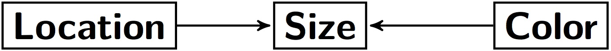
Stratified or Random?
Do you know all of the influences?
Size = Color + Location + ???
Stratified or Random?
How is your population defined?
What is the scale of your inference?
What might influence the inclusion of a replicate?
How important are external factors you know about?
How important are external factors you cannot assess?
Exercise
Draw a causal graph of the influences on one thing you measure
How would you sample your population?
Sampling
Sampling Nature
Describing your Sample
Using a Sample to Describe a Population
Taking a Descriptive
How big are individuals in this population?
Our ‘Sample’
[1] 41.11041 42.11062 48.31628 45.44011 51.28539 41.85113 43.02021
[8] 46.86495 47.03553 38.87441 46.56152 51.24369 40.79575 46.86209
[15] 31.41510How can we Understand Our Sample
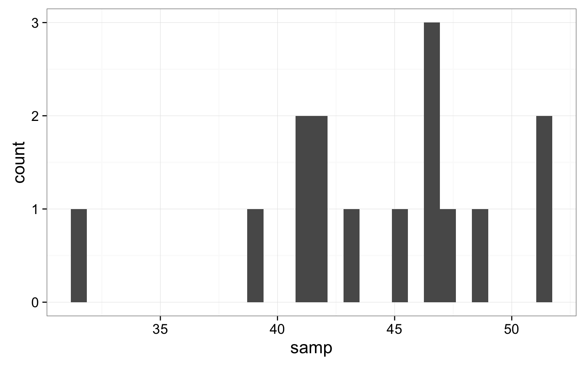
Median - Dead Center
[1] 31.41510 38.87441 40.79575 41.11041 41.85113 42.11062 43.02021
[8] 45.44011 46.56152 46.86209 46.86495 47.03553 48.31628 51.24369
[15] 51.28539[1] 45.44011What About the Variability?
Other Quantiles!Quantiles and Quartiles
[1] 31.41510 38.87441 40.79575 41.11041 41.85113 42.11062 43.02021
[8] 45.44011 46.56152 46.86209 46.86495 47.03553 48.31628 51.24369
[15] 51.28539Quantiles:
5% 10% 50% 90% 95%
36.63662 39.64295 45.44011 50.07273 51.25620 Quartiles (quarter-quantiles):
0% 25% 50% 75% 100%
31.41510 41.48077 45.44011 46.95024 51.28539 Inter-Quartile Range
IQR = Range from 0.25 to 0.75 Quantile
5% 10% 50% 90% 95%
36.63662 39.64295 45.44011 50.07273 51.25620 IQR = 5.4694721
Boxplots Show Quantiles
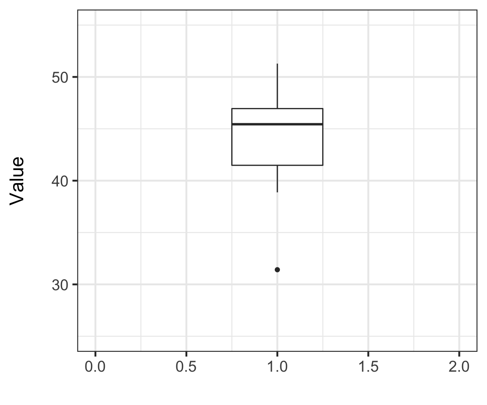
Whiskers show 1.5x the IQR
Sampling
Sampling Nature
Describing your Sample
Using a Sample to Describe a Population
This is Just a Sample
How Does our Sample Compare to the Population?
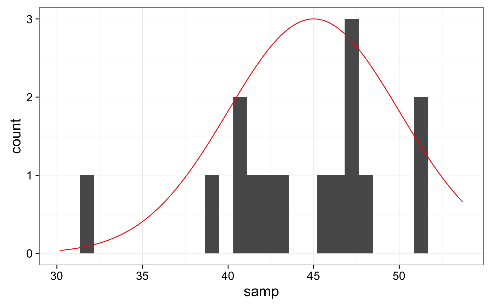
Estimating Population Parameters
- Before we described the sample
- We want to estimate population parameters
- N.B. Greek Letters = Population, English = Sample
Sample Properties: Mean
\(\large \bar{Y}\) - The average value of a sample
\(y_{i}\) - The value of a measurement for a single individual
n - The number of individuals in a sample
\(\mu\) - The average value of a population
(Greek = population, Latin = Sample)
How Good is our Estimate?

How Good is our Estimate?

Describing Population Variation
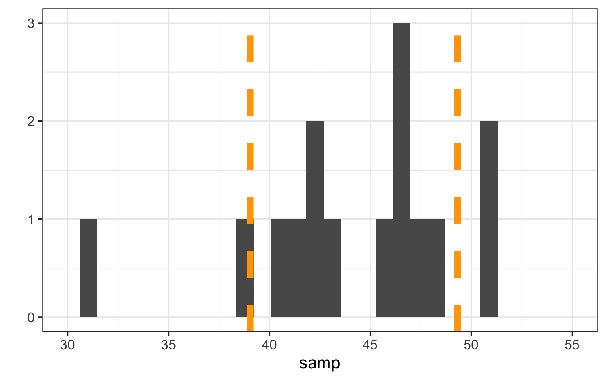
What is the range of values for 2/3 of a population?
Describing Population Variation
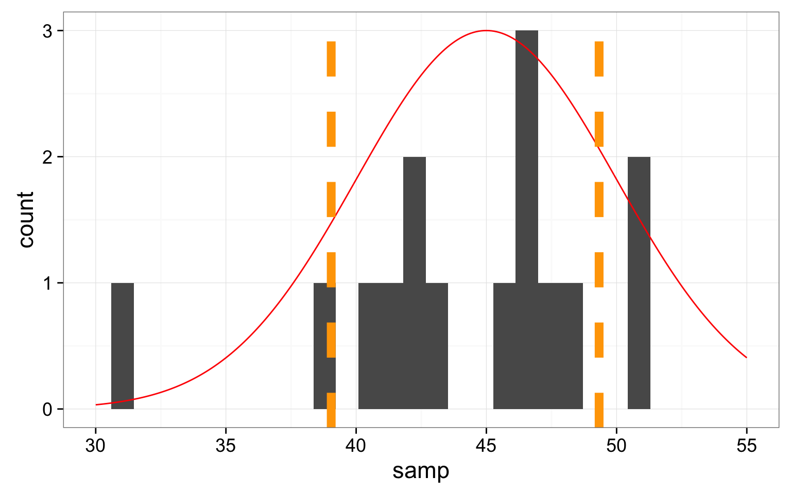
What is the range of values for 2/3 of a population?
Sample Properties: Variance
How variable was that population? \[\large s^2= \frac{\displaystyle \sum_{i=1}^{n}{(Y_i - \bar{Y})^2}} {n-1}\]
- Sums of Squares over n-1
- n-1 corrects for both sample size and sample bias
- \(\sigma^2\) if describing the population
- Units in square of measurement…
Sample Properties: Standard Deviation
\[ \large s = \sqrt{s^2}\]
- Units the same as the measurement
- If distribution is normal, 67% of data within 1 SD
- 95% within 2 SD
- \(\sigma\) if describing the population
How Well did we Do: 67%?

How Well did we Do: 95%?
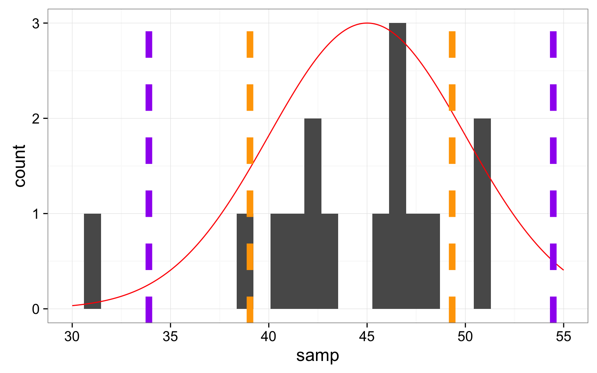